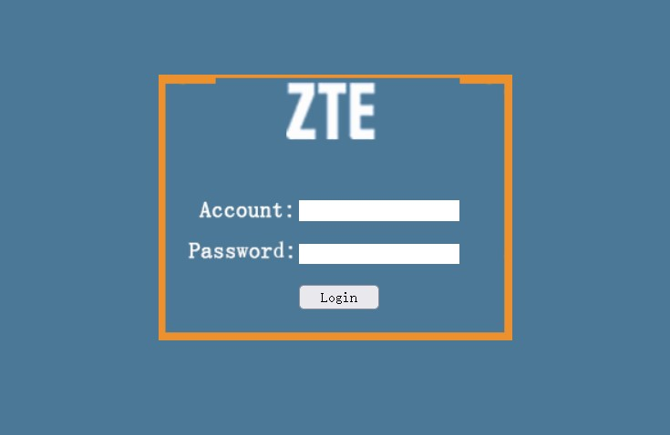
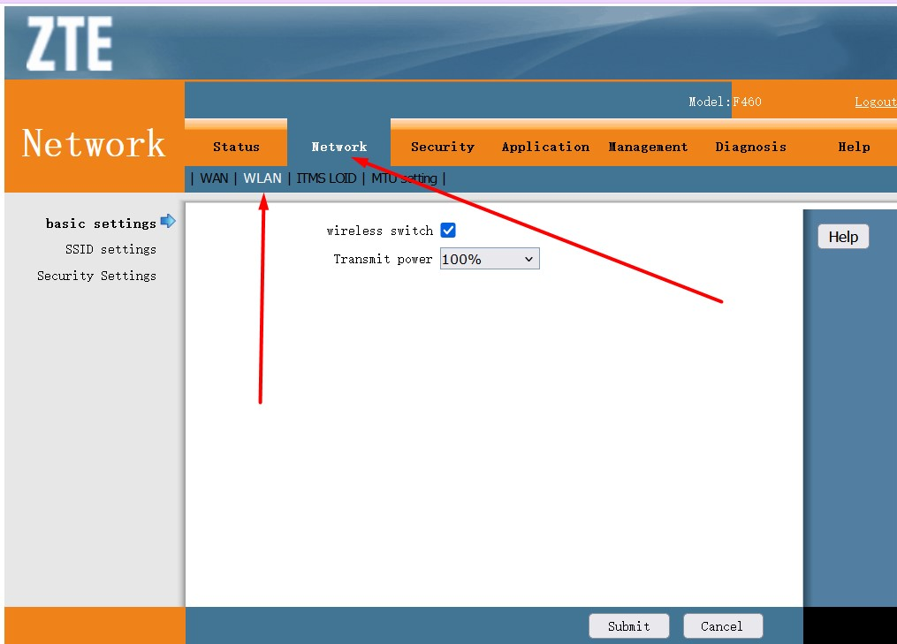
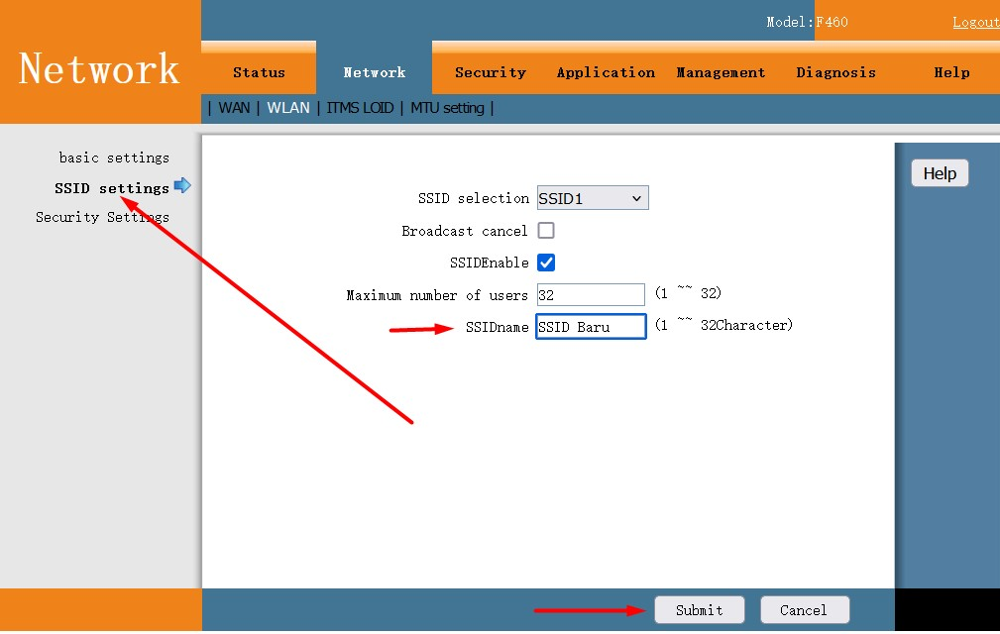
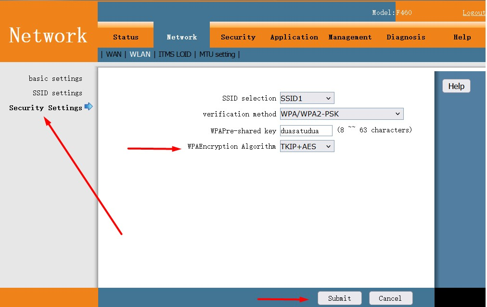

Pendahuluan
Mengganti password Wi-Fi dan SSID secara berkala penting untuk menjaga keamanan jaringan Anda. Dalam tutorial ini, Anda akan belajar cara login ke modem, mengubah SSID (nama jaringan Wi-Fi), serta mengganti password Wi-Fi Anda.
1. Login ke Modem/Router
- Buka browser Google Chrome dan ketik 192.168.1.1 di address bar, lalu klik Search / Cari.
- Kemudian muncul tampilan login modem:
- Masukkan Account "user" dan password "user", lalu klik "Login".

2. Mengganti SSID (Nama Wi-Fi)
- Buka menu Network lalu WLAN.
- Klik menu SSID settings di sebelah kiri.
- Temukan kolom SSIDname dan ganti dengan nama baru yang diinginkan.
- Contoh mengganti SSID:
- Klik SUBMIT untuk menyimpan perubahan.


3. Mengganti Password Wi-Fi
- Klik menu Security Settings di sebelah kiri.
- Temukan kolom WPAPre-shared key dan ganti dengan password baru.
- Pilih enkripsi TKIP+AES dan masukkan password baru.
- Contoh pengaturan password:
- Klik SUBMIT untuk menyimpan perubahan.

4. Restart Modem (Opsional)
Beberapa modem memerlukan restart agar perubahan dapat diterapkan. Anda dapat melakukan restart melalui menu modem atau dengan mematikan dan menyalakan kembali perangkat.
Penutup
Anda telah berhasil mengganti nama SSID dan password Wi-Fi Anda. Pastikan untuk mencatat perubahan tersebut agar tidak terlupa.
JIKA SETELAH GANTI PASSWORD TIDAK BISA, COBA LUPAKAN WIFI-NYA TERLEBIH DAHULU